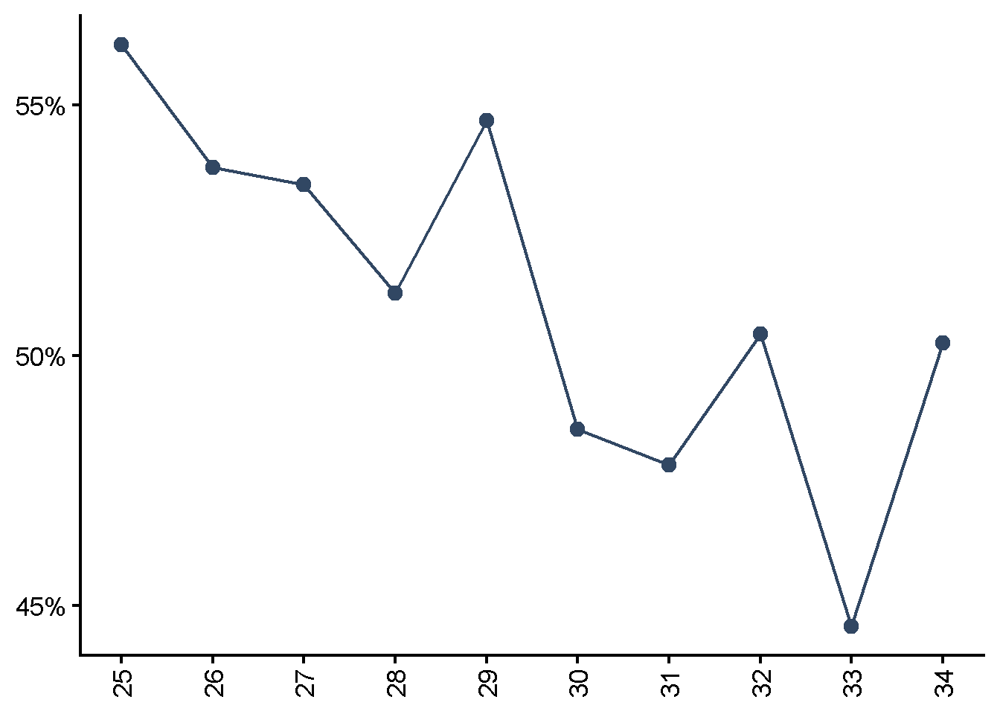
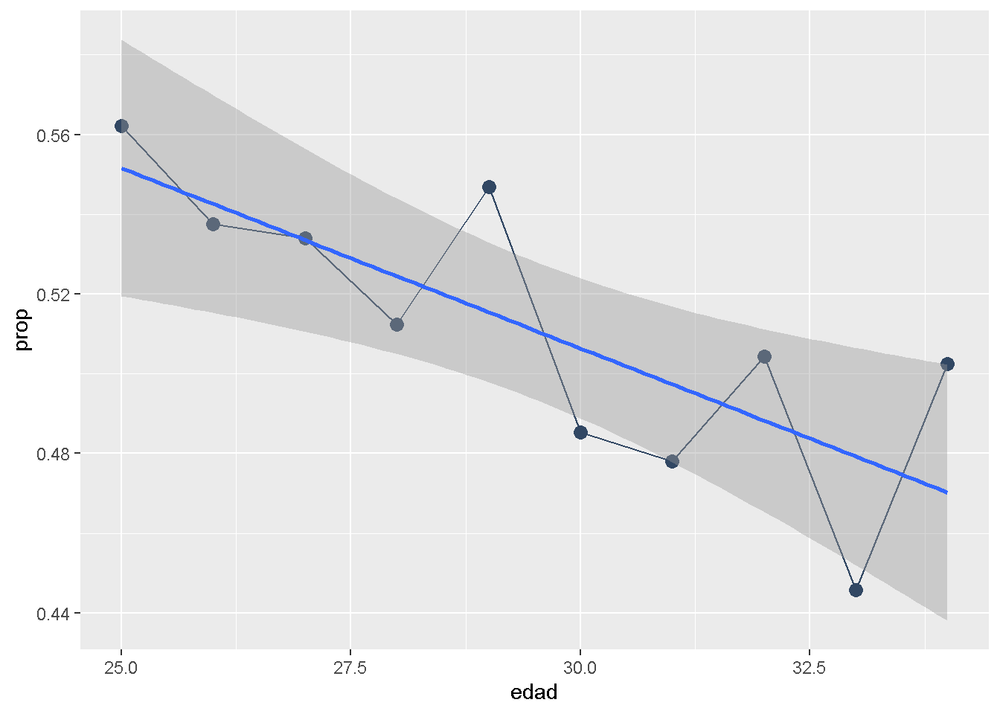
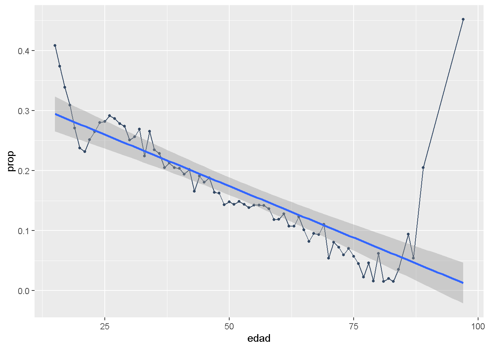
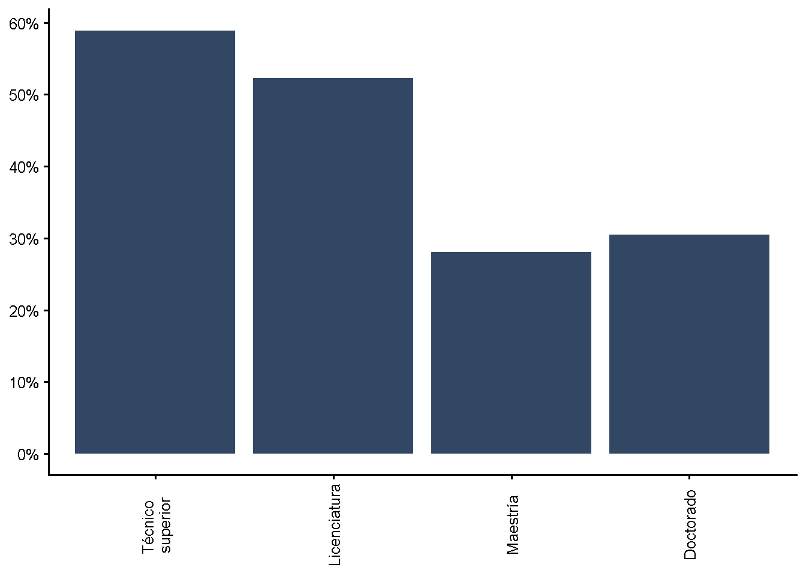
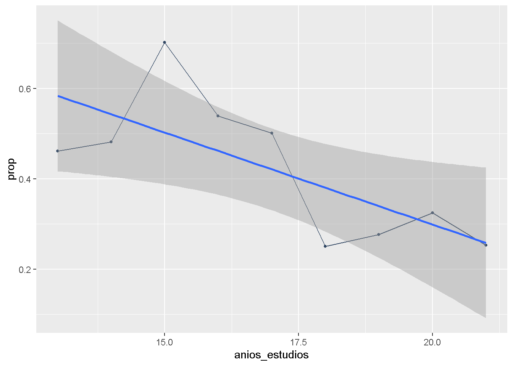
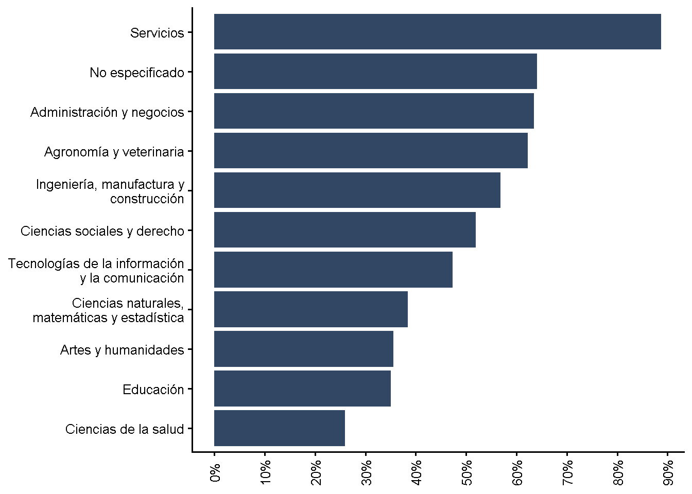
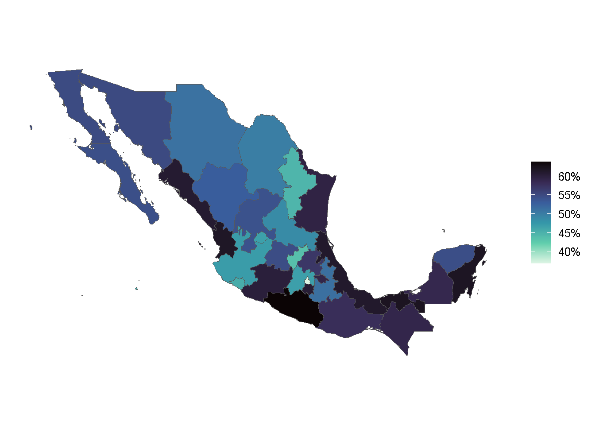
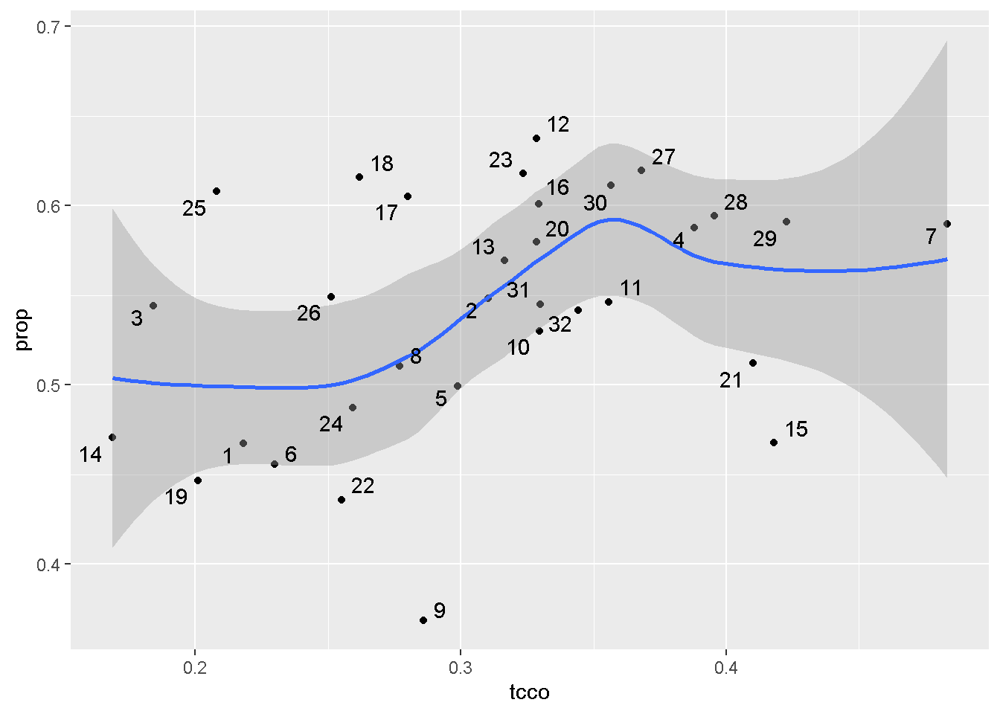
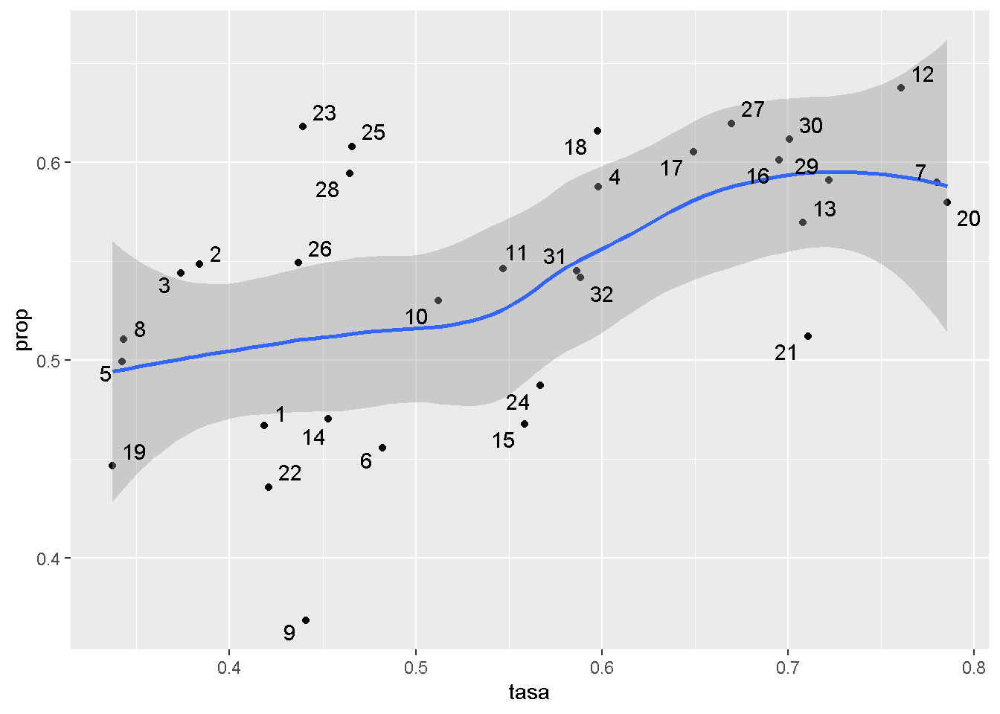

source("scripts/7_figuras_v2.R")Este documento tiene como objetivo servir de apoyo para la escritura de la versión 3 del capítulo 3 Resultados
INCIDENCIA GENERAL
tbl_inc_tot# A tibble: 4 × 4
edu_mismatch_obj n tot prop
<dbl> <int> <dbl> <dbl>
1 0 6944 2125052 0.477
2 1 7971 2268988 0.509
3 2 19 6362 0.00143
4 NA 204 53403 0.0120 El 50.9% de jóvenes egresados de educación superior se encuentran en ocupaciones que requieren una educación menor
El 47.7% están adecuadamente emparejados.
El 47.7% no presenta desajuste entre la educación que poseen y la requerida por la ocupación
Los resultados muestran que 1 de cada 2 jóvenes egresados presentan desajuste educativo, es decir, la educación que poseen es distinta a la requerida por la ocupación.
Los resultados muestran que una parte considerable de jóvenes egresados presentan desajuste educativo
POR GÉNERO
tbl_inc_genero# A tibble: 8 × 5
# Groups: mujer [2]
mujer edu_mismatch_obj n tot prop
<dbl> <dbl> <int> <dbl> <dbl>
1 0 0 3237 1010845 0.462
2 0 1 4035 1146639 0.524
3 0 2 11 3296 0.00151
4 0 NA 112 25590 0.0117
5 1 0 3707 1114207 0.491
6 1 1 3936 1122349 0.495
7 1 2 8 3066 0.00135
8 1 NA 92 27813 0.0123 El 49.1% de las jóvenes están adecuadamente emparejadas a la ocupación. Por su parte, el 46.2% de los hombres lo están.
En cuanto a la sobrecalificación, existen más hombres sobrecalificados que mujeres. Los primeros presentan un porcentaje de 52.4%, mientras que las mujeres 49.5% [esta diferencia es estadísticamente significativa?]
calcular_inc_svy_grp(datos_svy, edu_mismatch_obj, mujer)# A tibble: 8 × 5
# Groups: edu_mismatch_obj [4]
edu_mismatch_obj mujer n tot prop
<dbl> <dbl> <int> <dbl> <dbl>
1 0 0 3237 1010845 0.476
2 0 1 3707 1114207 0.524
3 1 0 4035 1146639 0.505
4 1 1 3936 1122349 0.495
5 2 0 11 3296 0.518
6 2 1 8 3066 0.482
7 NA 0 112 25590 0.479
8 NA 1 92 27813 0.521Del total de jóvenes sobrecalificados, el 49.5% son mujeres, mientras que 50.5% son hombres.
tbl_est_desc_genero# A tibble: 2 × 4
mujer n tot prop
<dbl> <int> <dbl> <dbl>
1 0 7395 2186370 0.491
2 1 7743 2267435 0.509Cabe señalar que no existe tanta diferencia de género en la composición de la muestra. Del total de observaciones, el 50.9% son mujeres y 49.1% son hombres.
[Recuerda que puede obtenerse el porcentaje general, como si fuera una media ponderada, así
\[ =(\% muestra\_muj * \% over\_muj) + ( \% muestra\_hom * \% over\_hom) \\ =\left(0.5091\ast0.495\right)+\left(0.4908\ast0.524\right) \\ =0.509\ =\ 50.9\% \]
Que es igual al porcentaje general
Donde: \(%over%\), se obtiene de grupo -> desajuste
]
POR EDAD
fig_inc_edadWarning in grid.Call(C_stringMetric, as.graphicsAnnot(x$label)): font family
not found in Windows font databaseWarning in grid.Call.graphics(C_text, as.graphicsAnnot(x$label), x$x, x$y, :
font family not found in Windows font database
Warning in grid.Call.graphics(C_text, as.graphicsAnnot(x$label), x$x, x$y, :
font family not found in Windows font database
Warning in grid.Call.graphics(C_text, as.graphicsAnnot(x$label), x$x, x$y, :
font family not found in Windows font database
Warning in grid.Call.graphics(C_text, as.graphicsAnnot(x$label), x$x, x$y, :
font family not found in Windows font database
Warning in grid.Call.graphics(C_text, as.graphicsAnnot(x$label), x$x, x$y, :
font family not found in Windows font database
Warning in grid.Call.graphics(C_text, as.graphicsAnnot(x$label), x$x, x$y, :
font family not found in Windows font database
Warning in grid.Call.graphics(C_text, as.graphicsAnnot(x$label), x$x, x$y, :
font family not found in Windows font database
Warning in grid.Call.graphics(C_text, as.graphicsAnnot(x$label), x$x, x$y, :
font family not found in Windows font database
Warning in grid.Call.graphics(C_text, as.graphicsAnnot(x$label), x$x, x$y, :
font family not found in Windows font database
Warning in grid.Call.graphics(C_text, as.graphicsAnnot(x$label), x$x, x$y, :
font family not found in Windows font database
Warning in grid.Call.graphics(C_text, as.graphicsAnnot(x$label), x$x, x$y, :
font family not found in Windows font database
Warning in grid.Call.graphics(C_text, as.graphicsAnnot(x$label), x$x, x$y, :
font family not found in Windows font database
Warning in grid.Call.graphics(C_text, as.graphicsAnnot(x$label), x$x, x$y, :
font family not found in Windows font database
Warning in grid.Call.graphics(C_text, as.graphicsAnnot(x$label), x$x, x$y, :
font family not found in Windows font database
Warning in grid.Call.graphics(C_text, as.graphicsAnnot(x$label), x$x, x$y, :
font family not found in Windows font database
Warning in grid.Call.graphics(C_text, as.graphicsAnnot(x$label), x$x, x$y, :
font family not found in Windows font database
Warning in grid.Call.graphics(C_text, as.graphicsAnnot(x$label), x$x, x$y, :
font family not found in Windows font database
Warning in grid.Call.graphics(C_text, as.graphicsAnnot(x$label), x$x, x$y, :
font family not found in Windows font database
Warning in grid.Call.graphics(C_text, as.graphicsAnnot(x$label), x$x, x$y, :
font family not found in Windows font database
Los resultados son relativamente acordes a la evidencia sugerida por la literatura, donde el porcentaje de individuos sobrecalificados disminuye conforme aumenta la edad de la muestra.
tbl_inc_edad# A tibble: 39 × 5
# Groups: edad [10]
edad edu_mismatch_obj n tot prop
<int> <dbl> <int> <dbl> <dbl>
1 25 0 571 165771 0.421
2 25 1 816 221121 0.562
3 25 2 2 453 0.00115
4 25 NA 25 6032 0.0153
5 26 0 619 187076 0.457
6 26 1 786 220196 0.538
7 26 2 1 142 0.000347
8 26 NA 15 2157 0.00527
9 27 0 657 194436 0.453
10 27 1 861 229175 0.534
# ℹ 29 more rowsEn ese sentido, el 56.2% de jóvenes de 25 años están sobrecalificados y en el caso de 34 años, el 50.3% lo está; una disminución del 10.5%.
Sin embargo, la tendencia no es tan clara o uniforme. En algunos casos, vuelve a incrementarse el porcentaje de sobrecalificados. Por ejemplo, en la edad de 28 años existen 51.2% de sobrecalificados, pero a la edad siguiente (29 años) se incrementa hasta 54.7%, es decir, un incremento del 6.8%.
0.503 / 0.562 - 1[1] -0.10498220.547 / 0.512 - 1[1] 0.06835938tbl_inc_edad |>
ungroup() |>
filter(edu_mismatch_obj == 1) |>
mutate(variacion = prop / lag(prop) - 1)# A tibble: 10 × 6
edad edu_mismatch_obj n tot prop variacion
<int> <dbl> <int> <dbl> <dbl> <dbl>
1 25 1 816 221121 0.562 NA
2 26 1 786 220196 0.538 -0.0436
3 27 1 861 229175 0.534 -0.00659
4 28 1 813 229462 0.512 -0.0405
5 29 1 816 244764 0.547 0.0672
6 30 1 847 235696 0.485 -0.113
7 31 1 791 227869 0.478 -0.0149
8 32 1 789 243036 0.504 0.0548
9 33 1 725 201158 0.446 -0.116
10 34 1 727 216511 0.503 0.127 En los casos donde existen mayor variación son los siguientes. De 29 a 30 años, disminuye 11.3% el porcentaje de sobrecalificados, dado que pasa de 54.7% a 48.5%.
Asimismo, de 32 a 33 años también existe una reducción del 11.6% de sobrecalificados, ya que pasa de 50.4% a 44.6%.
Por su parte, de 33 a 34 años se incrementa 12.7% el número de sobrecalificados, debido a que pasa de 44.6% a 50.3%.
tbl_inc_edad |>
filter(edu_mismatch_obj == 1) |>
mutate(edu_mismatch_obj = factor(edu_mismatch_obj)) |>
ggplot(aes(x = edad, y = prop)) +
geom_point(color = "#314763", size = 3) +
geom_line(color = "#314763") +
geom_smooth(method = "lm")`geom_smooth()` using formula = 'y ~ x'
Nota: no utilizo el método por defecto de geom_smooth, muestro el comportamiento de los datos a través de ajustarlos por MCO
Ajustando los datos a un modelo de regresión lineal, se observa que en promedio el porcentaje de sobrecalificados disminuye conforme aumenta la edad del individuo.
df <- tbl_inc_edad |>
filter(edu_mismatch_obj == 1)
model_inc_edad <- lm(prop ~ edad, data = df)
summary.lm(model_inc_edad)
Call:
lm(formula = prop ~ edad, data = df)
Residuals:
Min 1Q Median 3Q Max
-0.033416 -0.017482 -0.002191 0.014604 0.032334
Coefficients:
Estimate Std. Error t value Pr(>|t|)
(Intercept) 0.777797 0.077440 10.044 8.22e-06 ***
edad -0.009047 0.002613 -3.463 0.00853 **
---
Signif. codes: 0 '***' 0.001 '**' 0.01 '*' 0.05 '.' 0.1 ' ' 1
Residual standard error: 0.02373 on 8 degrees of freedom
Multiple R-squared: 0.5998, Adjusted R-squared: 0.5498
F-statistic: 11.99 on 1 and 8 DF, p-value: 0.008533En específico, un año adicional en la edad de la muestra disminuye, en promedio, 0.9% el porcentaje de sobrecalificados, manteniendo los demás factores como constantes
model_inc_edad$coefficients (Intercept) edad
0.777796860 -0.009047219 0.009047219 * 100[1] 0.9047219Por lo tanto, aunque la tendencia no sea tan clara, en promedio, conforme aumenta la edad del individuo disminuye el porcentaje de sobrecalificados.
No obstante, el porcentaje sigue siendo elevado el porcentaje observado es de 50.3% y el porcentaje estimado es de 47.0%, es decir, en la edad de 34 años el porcentaje de sobrecalificados, en promedio, es de 47.0%.
En ambos casos, la incidencia sigue siendo considerable.
model_inc_edad$fitted.values 1 2 3 4 5 6 7 8
0.5516164 0.5425692 0.5335220 0.5244747 0.5154275 0.5063803 0.4973331 0.4882859
9 10
0.4792386 0.4701914 ¿Cómo es el comportamiento de la población total ocupada?
Primero, se construye la tabla general. Por fortuna, el archivo “C:/Prog/tesis/scripts/6_cuadros_v3.R” ya está casi definida la tabla con la que deseamos trabajar. Queda pendiente definir las variables como factor y los datos como tipo survey
general2 <- convertir_a_factor(general)
general_svy <- definir_encuesta(general2)Después, se calcula la incidencia general para conocer el panorama
calcular_incidencia_svy_tot(general_svy, edu_mismatch_obj)# A tibble: 4 × 4
edu_mismatch_obj n tot prop
<dbl> <int> <dbl> <dbl>
1 0 114025 35320887 0.594
2 1 40133 12033003 0.202
3 2 33958 11292231 0.190
4 NA 2571 794639 0.0134El 20.2% de la población ocupada está sobrecalificada, mientras que el 59.4% está adecuadamente emparejada.
Ahora sí, se valida la incidencia por edad
# inc_gral <- general_svy |>
# filter(over_obj == 1) |>
# calcular_inc_svy_des(edad, over_obj)# inc_gral |>
# ungroup() |>
# summarise(tot = sum(tot))Esa no es el total de la población ocupada, se valida con la incidencia general
inc_gral <- calcular_incidencia_svy_tot(general_svy, edu_mismatch_obj)
inc_gral |>
summarise(tot = sum(tot))# A tibble: 1 × 1
tot
<dbl>
1 59440760Exacto! Sí son 59.4 millones. Entonces no puedo aplicar la fórmula, haré el cálculo manual
general_svy |>
summarise(tot = sum(fac_tri))# A tibble: 1 × 1
tot
<dbl>
1 59440760Sí se puede trabajar con los verbos del tidyverse
inc_gral_edad <- general_svy |>
group_by(edad, over_obj) |>
summarise(tot = sum(fac_tri)) |>
ungroup()
inc_gral_edad |>
group_by(over_obj) |>
summarise(tot = sum(tot)) # A tibble: 3 × 2
over_obj tot
<dbl> <dbl>
1 0 46613118
2 1 12033003
3 NA 794639Se observa que sí estaba bien. El código anterio solo mostraba el total de sobrecalificados.
Bueno, ahora se calcula porcentaje
inc_gral_edad <- inc_gral_edad |>
group_by(edad) |>
mutate(prop = tot / sum(tot))Se grafica
inc_gral_edad |>
filter(over_obj == 1) |>
mutate(over_obj = factor(over_obj)) |>
ggplot(aes(x = edad, y = prop)) +
geom_point(color = "#314763", size = 1) +
geom_line(color = "#314763") +
geom_smooth(method = "lm")`geom_smooth()` using formula = 'y ~ x'Warning: Removed 1 row containing non-finite outside the scale range
(`stat_smooth()`).Warning: Removed 1 row containing missing values or values outside the scale range
(`geom_point()`).Warning: Removed 1 row containing missing values or values outside the scale range
(`geom_line()`).
Ajustando los datos a un modelo de regresión lineal tipo MCO, en promedio también disminuye el porcentaje de sobrecalificados.
Se valida valor extremo
inc_gral_edad |>
filter(over_obj == 1 & edad > 80)# A tibble: 8 × 4
# Groups: edad [8]
edad over_obj tot prop
<int> <dbl> <dbl> <dbl>
1 81 1 458 0.0154
2 82 1 505 0.0202
3 83 1 488 0.0154
4 84 1 900 0.0354
5 86 1 1762 0.0939
6 87 1 444 0.0540
7 89 1 1287 0.205
8 97 1 573 0.452 El valor 97 NO indica valor no especificado. Si es una edad válida en la muestra.
Por tanto, la relación entre la edad y la sobrecalificación presenta una tendencia cóncava hacia arriba donde en los primeros y últimos años de edad laboral existe una elevada proporción de individuos sobrecalificados, pero conforme posteriormente (anteriormente) disminuye dicho porcentaje
df_2 <- inc_gral_edad |>
filter(over_obj == 1)
model_inc_edad_gral <- lm(prop ~ edad, data = df_2)
summary.lm(model_inc_edad_gral)
Call:
lm(formula = prop ~ edad, data = df_2)
Residuals:
Min 1Q Median 3Q Max
-0.05905 -0.02537 -0.01132 0.00670 0.43901
Coefficients:
Estimate Std. Error t value Pr(>|t|)
(Intercept) 0.3459281 0.0191204 18.09 < 2e-16 ***
edad -0.0034334 0.0003412 -10.06 2.26e-15 ***
---
Signif. codes: 0 '***' 0.001 '**' 0.01 '*' 0.05 '.' 0.1 ' ' 1
Residual standard error: 0.06363 on 72 degrees of freedom
(1 observation deleted due to missingness)
Multiple R-squared: 0.5844, Adjusted R-squared: 0.5787
F-statistic: 101.3 on 1 and 72 DF, p-value: 2.265e-15Con datos de la población total ocupada, un aumento en la edad del individuo disminuye, en promedio, 0.3% el porcentaje de sobrecalificados.
model_inc_edad_gral$coefficients (Intercept) edad
0.345928125 -0.003433419 0.003433419 * 100[1] 0.3433419POR NIVEL EDUCATIVO
tbl_inc_educacion# A tibble: 12 × 5
# Groups: educacion [4]
educacion edu_mismatch_obj n tot prop
<fct> <dbl> <int> <dbl> <dbl>
1 6 0 73 22055 0.309
2 6 1 146 42105 0.589
3 6 2 19 6362 0.0890
4 6 NA 3 955 0.0134
5 7 0 6256 1912714 0.465
6 7 1 7577 2150045 0.523
7 7 NA 190 47225 0.0115
8 8 0 555 177563 0.699
9 8 1 242 71262 0.281
10 8 NA 11 5223 0.0206
11 9 0 60 12720 0.695
12 9 1 6 5576 0.305 fig_inc_educacionWarning in grid.Call(C_stringMetric, as.graphicsAnnot(x$label)): font family
not found in Windows font databaseWarning in grid.Call.graphics(C_text, as.graphicsAnnot(x$label), x$x, x$y, :
font family not found in Windows font database
Warning in grid.Call.graphics(C_text, as.graphicsAnnot(x$label), x$x, x$y, :
font family not found in Windows font database
Warning in grid.Call.graphics(C_text, as.graphicsAnnot(x$label), x$x, x$y, :
font family not found in Windows font database
Warning in grid.Call.graphics(C_text, as.graphicsAnnot(x$label), x$x, x$y, :
font family not found in Windows font database
Warning in grid.Call.graphics(C_text, as.graphicsAnnot(x$label), x$x, x$y, :
font family not found in Windows font database
Warning in grid.Call.graphics(C_text, as.graphicsAnnot(x$label), x$x, x$y, :
font family not found in Windows font database
Warning in grid.Call.graphics(C_text, as.graphicsAnnot(x$label), x$x, x$y, :
font family not found in Windows font database
Warning in grid.Call.graphics(C_text, as.graphicsAnnot(x$label), x$x, x$y, :
font family not found in Windows font database
Warning in grid.Call.graphics(C_text, as.graphicsAnnot(x$label), x$x, x$y, :
font family not found in Windows font database
Los jóvenes egresados de técnico superior presentan el mayor porcentaje de sobrecalificados: 58.9%. Por su parte, los egresados de maestría presentan el menor porcentaje: 28.1%
Parece que conforme aumenta el nivel educativo del individuo disminuye el porcentaje de sobrecalificados.
Para ser exactos, creo que también se observa un comportamiento cóncavo hacia arriba. Se valida con anios_estudios
inc_anios_est <- calcular_inc_svy_des(datos_svy, anios_estudios, over_obj) |> ungroup()Se realiza gráfica
inc_anios_est |>
filter(over_obj == 1) |>
mutate(over_obj = factor(over_obj)) |>
ggplot(aes(x = anios_estudios, y = prop)) +
geom_point(color = "#314763", size = 1) +
geom_line(color = "#314763") +
geom_smooth(method = "lm")`geom_smooth()` using formula = 'y ~ x'Warning: Removed 1 row containing non-finite outside the scale range
(`stat_smooth()`).Warning: Removed 1 row containing missing values or values outside the scale range
(`geom_point()`).Warning: Removed 1 row containing missing values or values outside the scale range
(`geom_line()`).
En efecto, en promedio disminuye la proporción de sobrecalificados conforme se incrementan los años de estudios de la muestra
df_3 <- inc_anios_est |>
filter(over_obj == 1)
model_inc_anios_est <- lm(prop ~ anios_estudios, data = df_3)
summary.lm(model_inc_anios_est)
Call:
lm(formula = prop ~ anios_estudios, data = df_3)
Residuals:
Min 1Q Median 3Q Max
-0.12960 -0.06326 -0.00495 0.07692 0.19908
Coefficients:
Estimate Std. Error t value Pr(>|t|)
(Intercept) 1.11313 0.25490 4.367 0.00329 **
anios_estudios -0.04071 0.01482 -2.746 0.02867 *
---
Signif. codes: 0 '***' 0.001 '**' 0.01 '*' 0.05 '.' 0.1 ' ' 1
Residual standard error: 0.1148 on 7 degrees of freedom
(1 observation deleted due to missingness)
Multiple R-squared: 0.5186, Adjusted R-squared: 0.4498
F-statistic: 7.54 on 1 and 7 DF, p-value: 0.02867model_inc_anios_est$coefficients (Intercept) anios_estudios
1.11312824 -0.04070593 En promedio, disminuye 4.1% el porcentaje de sobrecalificados cuando aumenta un año de educación, ceteris paribus.
0.04070593 * 100[1] 4.070593¿Se puede valir por género? Quizá sí, pero sería sin la función
datos_svy |>
group_by(educacion, mujer, over_obj) |>
summarise(tot = sum(fac_tri)) |>
mutate(prop = tot / sum(tot)) |>
ungroup() |>
filter(over_obj == 1)# A tibble: 7 × 5
educacion mujer over_obj tot prop
<fct> <dbl> <dbl> <dbl> <dbl>
1 6 0 1 21861 0.568
2 6 1 1 20244 0.614
3 7 0 1 1087357 0.538
4 7 1 1 1062688 0.508
5 8 0 1 37421 0.304
6 8 1 1 33841 0.258
7 9 1 1 5576 0.432Espero entender bien, cuando se analiza por género. En el caso de técnico superior, el 61.4% de las mujeres están sobrecalificadas comparado con el 56.8% de los hombres.
En licenciatura: 53.8% hombres y 50.8%
En maestría: 30.4% hombres y 25.8% mujeres
En doctorado: 0% hombres y 43.2% mujeres
Conforme aumenta el nivel educativo, disminuye el porcentaje de mujeres sobrecalificadas
POR CARRERAS
tbl_inc_carreras |>
ungroup() |>
filter(edu_mismatch_obj == 1) |>
arrange(desc(prop))# A tibble: 11 × 5
campo_amplio edu_mismatch_obj n tot prop
<fct> <dbl> <int> <dbl> <dbl>
1 10 1 486 130017 0.888
2 99 1 37 11090 0.641
3 04 1 2273 669322 0.635
4 08 1 152 54215 0.623
5 07 1 1716 453177 0.568
6 03 1 1448 410916 0.520
7 06 1 437 141748 0.473
8 05 1 170 42116 0.384
9 02 1 241 67328 0.355
10 01 1 484 152728 0.351
11 09 1 527 136331 0.259fig_inc_carrerasWarning in grid.Call(C_textBounds, as.graphicsAnnot(x$label), x$x, x$y, : font
family not found in Windows font databaseWarning in grid.Call.graphics(C_text, as.graphicsAnnot(x$label), x$x, x$y, :
font family not found in Windows font database
Warning in grid.Call.graphics(C_text, as.graphicsAnnot(x$label), x$x, x$y, :
font family not found in Windows font database
Warning in grid.Call.graphics(C_text, as.graphicsAnnot(x$label), x$x, x$y, :
font family not found in Windows font database
Warning in grid.Call.graphics(C_text, as.graphicsAnnot(x$label), x$x, x$y, :
font family not found in Windows font database
Warning in grid.Call.graphics(C_text, as.graphicsAnnot(x$label), x$x, x$y, :
font family not found in Windows font database
Warning in grid.Call.graphics(C_text, as.graphicsAnnot(x$label), x$x, x$y, :
font family not found in Windows font database
Warning in grid.Call.graphics(C_text, as.graphicsAnnot(x$label), x$x, x$y, :
font family not found in Windows font database
Warning in grid.Call.graphics(C_text, as.graphicsAnnot(x$label), x$x, x$y, :
font family not found in Windows font database
Warning in grid.Call.graphics(C_text, as.graphicsAnnot(x$label), x$x, x$y, :
font family not found in Windows font database
Warning in grid.Call.graphics(C_text, as.graphicsAnnot(x$label), x$x, x$y, :
font family not found in Windows font database
Warning in grid.Call.graphics(C_text, as.graphicsAnnot(x$label), x$x, x$y, :
font family not found in Windows font database
Warning in grid.Call.graphics(C_text, as.graphicsAnnot(x$label), x$x, x$y, :
font family not found in Windows font database
Warning in grid.Call.graphics(C_text, as.graphicsAnnot(x$label), x$x, x$y, :
font family not found in Windows font database
Warning in grid.Call.graphics(C_text, as.graphicsAnnot(x$label), x$x, x$y, :
font family not found in Windows font database
Warning in grid.Call.graphics(C_text, as.graphicsAnnot(x$label), x$x, x$y, :
font family not found in Windows font database
Warning in grid.Call.graphics(C_text, as.graphicsAnnot(x$label), x$x, x$y, :
font family not found in Windows font database
Warning in grid.Call.graphics(C_text, as.graphicsAnnot(x$label), x$x, x$y, :
font family not found in Windows font database
Warning in grid.Call.graphics(C_text, as.graphicsAnnot(x$label), x$x, x$y, :
font family not found in Windows font database
Warning in grid.Call.graphics(C_text, as.graphicsAnnot(x$label), x$x, x$y, :
font family not found in Windows font database
El 88.8% de jóvenes egresados de la carrera de servicios están sobrecalificados.
Este es un hallazgo impresionante. La literatura no ha mostrado algo al respecto de la carrera de servicios. La literatura ha identificado que las carreras relacionadas a ciencias sociales y economico administrativas presentaban la mayor incidencia. Parece que, como lo sospechaba, la literatura no consideró los estudios de técnico superior, es decir, a toda la educación superior. Solamente se enfocaban en los individuos con estudios profesionales (de licenciatura). ¿Cómo se puede validar?
Primero, validando la composición de la distribución por nivel educativo
datos_svy |>
filter(campo_amplio == "10") |>
group_by(campo_amplio, educacion) |>
summarise(tot = sum(fac_tri)) |>
mutate(prop = tot / sum(tot)) |>
arrange(desc(prop))# A tibble: 3 × 4
# Groups: campo_amplio [1]
campo_amplio educacion tot prop
<fct> <fct> <dbl> <dbl>
1 10 7 133480 0.911
2 10 6 9925 0.0678
3 10 8 3087 0.0211Del total de individuos egresados de la carrera de servicios, el 91.1% son egresados de los estudios de licenciatura.
Entonces, no. A pesar de que elimine los estudios de técnico superior, la carrera de servicios presentará la mayor incidencia. Se valida.
datos_svy |>
filter(campo_amplio == "10") |>
group_by(campo_amplio, educacion, over_obj) |>
summarise(tot = sum(fac_tri)) |>
mutate(prop = tot / sum(tot))# A tibble: 7 × 5
# Groups: campo_amplio, educacion [3]
campo_amplio educacion over_obj tot prop
<fct> <fct> <dbl> <dbl> <dbl>
1 10 6 0 2536 0.256
2 10 6 1 7389 0.744
3 10 7 0 11070 0.0829
4 10 7 1 120830 0.905
5 10 7 NA 1580 0.0118
6 10 8 0 1289 0.418
7 10 8 1 1798 0.582 En efecto, del total de jóvenes egresados de la carrera de servicios los que tienen estudios de licenciatura, el 90.5% está sobrecalificado. Por su parte, los egresados de técnico superior el 74.4% lo está.
¿Qué campos específicos presentan mayor sobrecalificación?
Primero se añade dicha variable, se intenta directamente en jovenes
datos_procesados <- datos_procesados %>%
mutate(
campo_amplio = if_else(str_length(cs_p14_c) == 5, str_c("0", cs_p14_c), cs_p14_c)
) %>%
separate(
campo_amplio,
# campo amplio a 1 dígito de CMPE
into = c("campo_amplio", "res"),
sep = 2
) %>%
select(-res)df_4 <- jovenes |>
mutate(
campo_espec = if_else(str_length(cs_p14_c) == 5, str_c("0", cs_p14_c), cs_p14_c),
campo_detal = if_else(str_length(cs_p14_c) == 5, str_c("0", cs_p14_c), cs_p14_c),
) %>%
separate(
campo_espec,
# campo específico a 2 dígitos de CMPE
into = c("campo_espec", "res"),
sep = 3
) %>%
separate(
campo_detal,
# campo detallado a 3 dígitos de CMPE
into = c("campo_detal", "res"),
sep = 4
) %>%
select(-res)Se calcula incidencia
df_6 <- df_4 |>
group_by(campo_espec, over_obj) |>
summarise(tot = sum(fac_tri)) |>
mutate(prop = tot / sum(tot)) |>
ungroup() |>
filter(over_obj == 1) |>
arrange(desc(prop))`summarise()` has grouped output by 'campo_espec'. You can override using the
`.groups` argument.df_6# A tibble: 29 × 4
campo_espec over_obj tot prop
<chr> <dbl> <dbl> <dbl>
1 101 1 120809 0.909
2 104 1 3569 0.900
3 081 1 44682 0.737
4 102 1 5443 0.712
5 042 1 384434 0.695
6 999 1 11090 0.641
7 071 1 346133 0.620
8 041 1 284888 0.568
9 031 1 170938 0.549
10 032 1 34433 0.523
# ℹ 19 more rowsLos campos específicos que presentan mayor sobrecalificación son:
- 101 servicios profesionales y deportes: 90.9%
- 104: servicios de seguridad: 90.0%
- 081: agronomía, horticultura, silvicultura y pesca: 73.7%
Por su parte, las que presentan menor incidencia:
- 091: ciencias médicas: 9.3%
- 103: seguridad para el trabajo: 10.2%
- 053 Matemáticas y estadística: 18.2%
¿Cuántos están por encima de la incidencia general?
df_5 <- tribble(
~campo_espec, ~over_obj, ~tot, ~prop,
"general", 1, 1, 0.509449336
)
df_6 |>
add_row(df_5) |>
filter(prop >= prop[campo_espec == "general"])# A tibble: 13 × 4
campo_espec over_obj tot prop
<chr> <dbl> <dbl> <dbl>
1 101 1 120809 0.909
2 104 1 3569 0.900
3 081 1 44682 0.737
4 102 1 5443 0.712
5 042 1 384434 0.695
6 999 1 11090 0.641
7 071 1 346133 0.620
8 041 1 284888 0.568
9 031 1 170938 0.549
10 032 1 34433 0.523
11 072 1 25965 0.512
12 062 1 40685 0.510
13 general 1 1 0.509df_6 |>
add_row(df_5) |>
filter(prop <= prop[campo_espec == "general"])# A tibble: 18 × 4
campo_espec over_obj tot prop
<chr> <dbl> <dbl> <dbl>
1 033 1 205545 0.497
2 095 1 14455 0.464
3 061 1 101063 0.460
4 051 1 28310 0.438
5 011 1 92276 0.435
6 073 1 81079 0.430
7 052 1 10309 0.401
8 094 1 44367 0.387
9 021 1 53191 0.365
10 082 1 9533 0.361
11 022 1 14137 0.323
12 012 1 60452 0.271
13 092 1 54580 0.269
14 093 1 11539 0.211
15 053 1 3497 0.182
16 103 1 196 0.102
17 091 1 11390 0.0931
18 general 1 1 0.509 12 carreras son superior a la incidencia general.
Mientras que 17 son menores a la incidencia general
Por último,
df_4 |>
group_by(campo_espec, over_obj, campo_detal) |>
summarise(tot = sum(fac_tri)) |>
mutate(prop = tot / sum(tot)) |>
arrange(desc(prop), .by_group = TRUE)`summarise()` has grouped output by 'campo_espec', 'over_obj'. You can override
using the `.groups` argument.# A tibble: 278 × 5
# Groups: campo_espec, over_obj [83]
campo_espec over_obj campo_detal tot prop
<chr> <dbl> <chr> <dbl> <dbl>
1 011 0 0115 63455 0.543
2 011 0 0111 43944 0.376
3 011 0 0113 5229 0.0448
4 011 0 0112 2507 0.0215
5 011 0 0110 1272 0.0109
6 011 0 0114 387 0.00331
7 011 1 0111 50747 0.550
8 011 1 0115 34976 0.379
9 011 1 0112 2821 0.0306
10 011 1 0113 2627 0.0285
# ℹ 268 more rowsDel total de sobrecalificados:
De las carreras con mayor sobrecalificación:
101
- El 57.0% son de 1015 gastronomía y servicios
- 25.9% de 1016 Hospitalidad y turismo
- 15.0% de 1013 Servicios de cuidado personal y belleza
104
- 96.6% de 1041 Seguridad pública
081
- 89.8% de 0811 Producción y explotación agrícola y ganadera
Del total sin sobrecalificación:
De las carreras con menor sobrecalificación:
091
- 84.2% de 0911 Medicina general
053
- 55.0% de 0531 Matemáticas
- 45.0% de 0532 Estadística y actuaría
Si Salas Velasco menciona que las carreras de habilidades específicas presentan menor probabilidad de desajuste vertical y horizontal, ¿por qué las carreras de servicios presentan la mayor incidencia?
POR REGIONES
tbl_inc_regiones |>
filter(edu_mismatch_obj == 1)# A tibble: 5 × 5
# Groups: regiones [5]
regiones edu_mismatch_obj n tot prop
<fct> <dbl> <int> <dbl> <dbl>
1 1 1 2218 440504 0.599
2 2 1 1782 850699 0.462
3 3 1 998 315001 0.502
4 4 1 1698 467714 0.514
5 5 1 1275 195070 0.578Me percate que tenía asignado incorrectamente los valores que identifica cada región del país
El cambio se hace en “C:/Prog/tesis/scripts/3_construccion_variables_v2.R” y se guardan en “C:/Prog/tesis/scripts/3_construccion_variables_v3.R”. Asimismo, se modifica “C:/Prog/tesis/scripts/6_cuadros_v3.R” el cambio de archivo. Se vuelve a ejecutar todo el código de este archivo
Después de aplicar los cambios. Se observa que la región sur presenta la mayor incidencia: 59.9%. Mientras que la región centro la menor incidencia: 46.2%.
POR ESTADOS
tbl_inc_estados |>
filter(edu_mismatch_obj == 1) |>
arrange(desc(prop))# A tibble: 32 × 5
# Groups: ent [32]
ent edu_mismatch_obj n tot prop
<chr> <dbl> <int> <dbl> <dbl>
1 12 1 163 41318 0.637
2 27 1 266 44468 0.620
3 23 1 238 48014 0.618
4 18 1 296 26647 0.616
5 30 1 309 117148 0.611
6 25 1 305 90695 0.608
7 17 1 200 41958 0.605
8 16 1 212 87706 0.601
9 28 1 327 77029 0.594
10 29 1 205 27712 0.591
# ℹ 22 more rowsfig_inc_estadosWarning in grid.Call(C_textBounds, as.graphicsAnnot(x$label), x$x, x$y, : font
family not found in Windows font database
Los estados que presentan mayor incidencia:
- 12 Guerrero: 63.7%
- 27 Tabasco: 62.0%
- 23 Quintana Roo: 61.8%
Por su parte, los que presentan menor incidencia:
- 9 CDMX: 36.8%
- 22 Querétaro: 43.6%
- 19 Nuevo Léon: 44.7%
¿Cuántos están por encima o por debajo de la incidencia general?
df_7 <- tribble(
~ent, ~edu_mismatch_obj, ~n, ~tot, ~prop,
"general", 1, 1, 1, 0.509449336
)
tbl_inc_estados |>
ungroup() |>
add_row(df_7) |>
filter(edu_mismatch_obj == 1) |>
filter(prop >= prop[ent == "general"])# A tibble: 24 × 5
ent edu_mismatch_obj n tot prop
<chr> <dbl> <dbl> <dbl> <dbl>
1 10 1 259 34874 0.530
2 11 1 222 89155 0.546
3 12 1 163 41318 0.637
4 13 1 204 46642 0.569
5 16 1 212 87706 0.601
6 17 1 200 41958 0.605
7 18 1 296 26647 0.616
8 2 1 290 71615 0.548
9 20 1 221 50843 0.580
10 21 1 257 94780 0.512
# ℹ 14 more rowstbl_inc_estados |>
ungroup() |>
add_row(df_7) |>
filter(edu_mismatch_obj == 1) |>
filter(prop <= prop[ent == "general"])# A tibble: 10 × 5
ent edu_mismatch_obj n tot prop
<chr> <dbl> <dbl> <dbl> <dbl>
1 1 1 193 28429 0.467
2 14 1 215 143075 0.470
3 15 1 279 306218 0.468
4 19 1 219 112543 0.447
5 22 1 235 50144 0.436
6 24 1 174 41667 0.487
7 5 1 335 66240 0.499
8 6 1 204 14124 0.456
9 9 1 180 194090 0.368
10 general 1 1 1 0.50923 estados tienen una incidencia mayor a la general y 9 por debajo
Parece existir una relación entre las condiciones laborales precarias y la sobrecalificación por entidad federativa, pero ¿cómo validarlo?
- Tasa de condiciones críticas de ocupación TCCO
- Tasa de informalidad laboral 1 TIL1
Pero, ¿qué es TCCO?
Se investigo en internet: https://www.inegi.org.mx/contenidos/saladeprensa/boletines/2026/iooe/IOE2026_01.pdf p. 9
Además, de las tasa mencionadas existen:
- Tasa de presión general
- Tasa de subocupación
A continuación, se definen
Tasa de presión general:
“… la tasa es una medida global de la competencia por plazas de trabajo que se conforma por quienes quieren trabajar; por quienes tienen un empleo, pero quieren cambiarlo; y por quienes buscan otro más para tener un segundo trabajo.”
Tasa de subocupación:
“Constituye a la población ocupada que tiene la necesidad y disponibilidad de ofertar más tiempo de trabajo de lo que su ocupación actual le permite.”
Tasa de condiciones críticas de ocupación:
“Indicador de condiciones inadecuadas de empleo desde el punto de vista del tiempo de trabajo, los ingresos o una combinación insatisfactoria de ambos. Incluye a las personas que trabajan menos de 35 horas a la semana por razones ajenas a sus decisiones, a quienes trabajan más de 35 horas semanales con ingresos mensuales inferiores al salario mínimo y a quienes laboran más de 48 horas semanales y que ganan hasta dos salarios mínimos”
Tasa de informalidad laboral 1:
“Se refiere a la suma, sin duplicar, de las y los ocupados que son laboralmente vulnerables por la naturaleza de la unidad económica para la que trabajan, más aquellas personas cuyo vínculo o dependencia laboral no se reconoce por su fuente de trabajo. En esta tasa se incluyen —además del componente que labora en micronegocios no registrados o sector informal— otras modalidades análogas, como las y los ocupados por cuenta propia en la agricultura de subsistencia, así como a quienes laboran sin la protección de la seguridad social y cuyos servicios los utilizan las unidades económicas registradas”
Es decir,
- TPG: refiere competencia por puestos de trabajo
- TSUB: indica cuántas personas quieren trabajar más tiempo
- TCCO: condición del trabajo medido en tiempo de trabajo e ingreso percibido
- TIL1: trabajadores vulnerables o que la empresa no los reconoce como tal
Me interesa TCCO y TIL1, establezco que las características de la ocupación se relacionan con la sobrecalificación, es decir, en los estados donde existe una mayor tasa crítica de ocupación hay mayor incidencia y viceversa.
Vamos a empezar con TCCO
De acuerdo a (INEGI, 2023) se calcula así
\[ TCCO = PCCO / PO * 100 \]
Donde
\(PCCO\): Población en Condiciones Críticas de Ocupación (TCCO=1 a 3)
\(PO\): Población Ocupada (Clase2=1)
Primero, vamos a calcular la tasa general para lo cual ocuparemos la tabla ocupada
ocupada |>
count(tcco) # A tibble: 4 × 2
tcco n
<chr> <int>
1 0 131634
2 1 360
3 2 41849
4 3 16844Entonces, se seleccionan los valores distintos a 0.
ocupada |>
count(clase2)# A tibble: 1 × 2
clase2 n
<chr> <int>
1 1 190687Se me ocurre a partir de aplicar filtro en summarise
ocupada |>
mutate(fac_tri = as.double(fac_tri)) |>
summarise(
pcco = sum(fac_tri[tcco != "0"]),
po = sum(fac_tri),
tcco = pcco / po
)# A tibble: 1 × 3
pcco po tcco
<dbl> <dbl> <dbl>
1 19164131 59440760 0.322Se valida con “https://www.inegi.org.mx/contenidos/saladeprensa/boletines/2025/enoe/enoe2025_08.pdf”
Los resultados se aproximan mucho. En el informe aparece una tasa de 32.5% y aquí de 32.2%
Ahora se procede a crear la función
calcular_tcco <- function(datos, ponderador){
datos |>
summarise(
pcco = sum({{ ponderador }}[tcco != "0"]),
po = sum({{ ponderador }}),
tcco = pcco / po
)
}Se valida
ocupada |>
mutate(fac_tri = as.double(fac_tri)) |>
calcular_tcco(fac_tri)# A tibble: 1 × 3
pcco po tcco
<dbl> <dbl> <dbl>
1 19164131 59440760 0.322Ahora se hace a nivel estatal
ocupada |>
mutate(fac_tri = as.double(fac_tri)) |>
group_by(ent) |>
summarise(
pcco = sum(fac_tri[tcco != "0"]),
po = sum(fac_tri),
tcco = pcco / po
)# A tibble: 32 × 4
ent pcco po tcco
<chr> <dbl> <dbl> <dbl>
1 1 142276 652132 0.218
2 10 283681 860551 0.330
3 11 1014042 2850322 0.356
4 12 495084 1507245 0.328
5 13 461209 1457012 0.317
6 14 653556 3874934 0.169
7 15 3407651 8152117 0.418
8 16 743940 2258881 0.329
9 17 236831 845616 0.280
10 18 162355 619858 0.262
# ℹ 22 more rowsEstá correcto!!
Ahora se unen
tcco_estados <- ocupada |>
mutate(fac_tri = as.double(fac_tri)) |>
group_by(ent) |>
summarise(
pcco = sum(fac_tri[tcco != "0"]),
po = sum(fac_tri),
tcco = pcco / po
)Se valida tipos de datos en tbl_inc_estados
glimpse(tbl_inc_estados)Rows: 110
Columns: 5
Groups: ent [32]
$ ent <chr> "1", "1", "1", "1", "10", "10", "10", "11", "11", "11…
$ edu_mismatch_obj <dbl> 0, 1, 2, NA, 0, 1, NA, 0, 1, NA, 0, 1, NA, 0, 1, 2, N…
$ n <int> 215, 193, 1, 8, 240, 259, 4, 202, 222, 4, 103, 163, 4…
$ tot <dbl> 31264, 28429, 167, 1005, 30081, 34874, 842, 73287, 89…
$ prop <dbl> 0.513661382, 0.467082888, 0.002743777, 0.016511953, 0…Se unen
tcco_estados_over <- tbl_inc_estados |>
filter(edu_mismatch_obj == 1) |>
left_join(tcco_estados, by = "ent")Se grafica
tcco_estados_over |>
ggplot(aes(tcco, prop)) +
geom_point() +
geom_smooth() +
geom_text_repel(aes(label = ent))`geom_smooth()` using method = 'loess' and formula = 'y ~ x'
Sin establecer ningún tipo de relación, a priori, establecido por defecto en geom_smooth. Se observa un comportamiento casi lineal.
Se calcula coeficiente de correlación
stats::cor(tcco_estados_over$tcco, tcco_estados_over$prop)[1] 0.3822627Es del 38.2%, que indica una relación positiva
Ahora vayamos con las demás tasas. Me interesa la tasa de informalidad 1. Se calcula así
\[ TIL1 = POI / PO \]
Donde
\(PO\): población en Ocupación Informal (EMP_PPAL=1)
\(PO\): Población Ocupada (Clase2=1)
Se calcula TIL1 general
ocupada |>
mutate(fac_tri = as.double(fac_tri)) |>
summarise(
poi = sum(fac_tri[emp_ppal == "1"]),
po = sum(fac_tri),
til1 = poi / po
)# A tibble: 1 × 3
poi po til1
<dbl> <dbl> <dbl>
1 32589068 59440760 0.548Está correcto
Se calcula a nivel estatal
# solo para TIL1
calcular_til1_estados <- function(datos, grupo, ponderador){
datos |>
mutate(ponderador = as.double({{ ponderador }})) |>
group_by({{ grupo }}) |>
summarise(
poi = sum(ponderador[emp_ppal == "1"]),
po = sum(ponderador),
til1 = poi / po
)
}
# Obtener tasa en general
calcular_t_ocup_gpo <- function(datos, grupo, ponderador, poblacion, condicion, valor){
# concateno
filtro <- paste(poblacion, condicion, valor)
datos |>
mutate(ponderador = as.double({{ ponderador }})) |>
group_by({{ grupo }}) |>
summarise(
numerador = sum(ponderador[ !!parse_expr(filtro) ]),
denominador = sum(ponderador),
tasa = numerador / denominador
)
}
crear_fig_tasa_vs_over <- function(datos, grupo, tasa, prop){
datos |>
ggplot(aes({{ tasa }}, {{ prop }})) +
geom_point() +
geom_smooth() +
geom_text_repel(aes(label = {{ grupo }}))
}Se valida
TIL1
til1_estados <- calcular_t_ocup_gpo(ocupada, ent, fac_tri, "emp_ppal", "==", "1")Sí se pudo!!!
Se une
til1_estados_over <- tbl_inc_estados |>
filter(edu_mismatch_obj == 1) |>
left_join(til1_estados, by = "ent")
crear_fig_tasa_vs_over(til1_estados_over, ent, tasa, prop)`geom_smooth()` using method = 'loess' and formula = 'y ~ x'
Existe una mejor relación
stats::cor(til1_estados_over$tasa, til1_estados_over$prop)[1] 0.5515643unir_tbl_tasa_over <- function(datos1, datos2, llave){
datos1 |>
filter(edu_mismatch_obj == 1) |>
left_join(datos2, by = join_by({{ llave }}))
}Se valida
unir_tbl_tasa_over(tbl_inc_estados, til1_estados, ent)# A tibble: 32 × 8
# Groups: ent [32]
ent edu_mismatch_obj n tot prop numerador denominador tasa
<chr> <dbl> <int> <dbl> <dbl> <dbl> <dbl> <dbl>
1 1 1 193 28429 0.467 273102 652132 0.419
2 10 1 259 34874 0.530 440602 860551 0.512
3 11 1 222 89155 0.546 1558997 2850322 0.547
4 12 1 163 41318 0.637 1146195 1507245 0.760
5 13 1 204 46642 0.569 1031145 1457012 0.708
6 14 1 215 143075 0.470 1754979 3874934 0.453
7 15 1 279 306218 0.468 4553459 8152117 0.559
8 16 1 212 87706 0.601 1570417 2258881 0.695
9 17 1 200 41958 0.605 548809 845616 0.649
10 18 1 296 26647 0.616 370417 619858 0.598
# ℹ 22 more rowsDe momento me quedo con las dos tasas calculadas:
- TCCO
- TIL1
tcco_estados_over# A tibble: 32 × 8
# Groups: ent [32]
ent edu_mismatch_obj n tot prop pcco po tcco
<chr> <dbl> <int> <dbl> <dbl> <dbl> <dbl> <dbl>
1 1 1 193 28429 0.467 142276 652132 0.218
2 10 1 259 34874 0.530 283681 860551 0.330
3 11 1 222 89155 0.546 1014042 2850322 0.356
4 12 1 163 41318 0.637 495084 1507245 0.328
5 13 1 204 46642 0.569 461209 1457012 0.317
6 14 1 215 143075 0.470 653556 3874934 0.169
7 15 1 279 306218 0.468 3407651 8152117 0.418
8 16 1 212 87706 0.601 743940 2258881 0.329
9 17 1 200 41958 0.605 236831 845616 0.280
10 18 1 296 26647 0.616 162355 619858 0.262
# ℹ 22 more rowstil1_estados_over# A tibble: 32 × 8
# Groups: ent [32]
ent edu_mismatch_obj n tot prop numerador denominador tasa
<chr> <dbl> <int> <dbl> <dbl> <dbl> <dbl> <dbl>
1 1 1 193 28429 0.467 273102 652132 0.419
2 10 1 259 34874 0.530 440602 860551 0.512
3 11 1 222 89155 0.546 1558997 2850322 0.547
4 12 1 163 41318 0.637 1146195 1507245 0.760
5 13 1 204 46642 0.569 1031145 1457012 0.708
6 14 1 215 143075 0.470 1754979 3874934 0.453
7 15 1 279 306218 0.468 4553459 8152117 0.559
8 16 1 212 87706 0.601 1570417 2258881 0.695
9 17 1 200 41958 0.605 548809 845616 0.649
10 18 1 296 26647 0.616 370417 619858 0.598
# ℹ 22 more rowsPor último, vamos a realizar una regresión múltiple con dichas tasas
estados_tasas_over <- tcco_estados_over |>
full_join(til1_estados_over, by = "ent") |>
select(ent, prop.x, tcco, tasa) |>
rename(
"over" = "prop.x",
"til1" = "tasa"
)
model_estados_t_over <- lm(over ~ tcco + til1, data = estados_tasas_over)
summary.lm(model_estados_t_over)
Call:
lm(formula = over ~ tcco + til1, data = estados_tasas_over)
Residuals:
Min 1Q Median 3Q Max
-0.146478 -0.038365 0.000848 0.040430 0.101513
Coefficients:
Estimate Std. Error t value Pr(>|t|)
(Intercept) 0.39163 0.04690 8.350 3.33e-09 ***
tcco 0.05372 0.17432 0.308 0.7602
til1 0.24448 0.09441 2.590 0.0149 *
---
Signif. codes: 0 '***' 0.001 '**' 0.01 '*' 0.05 '.' 0.1 ' ' 1
Residual standard error: 0.057 on 29 degrees of freedom
Multiple R-squared: 0.3065, Adjusted R-squared: 0.2587
F-statistic: 6.408 on 2 and 29 DF, p-value: 0.004957TCCO no es significativa!!! Se elimina del modelo y se vuelve a estimar
model_estados_t_over <- lm(over ~ til1, data = estados_tasas_over)
summary.lm(model_estados_t_over)
Call:
lm(formula = over ~ til1, data = estados_tasas_over)
Residuals:
Min 1Q Median 3Q Max
-0.145815 -0.040522 0.003539 0.037131 0.104217
Coefficients:
Estimate Std. Error t value Pr(>|t|)
(Intercept) 0.39830 0.04097 9.722 8.78e-11 ***
til1 0.26268 0.07253 3.622 0.00107 **
---
Signif. codes: 0 '***' 0.001 '**' 0.01 '*' 0.05 '.' 0.1 ' ' 1
Residual standard error: 0.05613 on 30 degrees of freedom
Multiple R-squared: 0.3042, Adjusted R-squared: 0.281
F-statistic: 13.12 on 1 and 30 DF, p-value: 0.001067model_estados_t_over$coefficients(Intercept) til1
0.3982993 0.2626835 El modelo explica el 30.4% de la variabilidad de los datos (R-Cuadrada).
Por otra parte, el coeficiente tiene un nivel de confianza del 99%, siendo estadísticamente significativo.
Indica que, un aumento del 1% de la tasa de informalidad laboral 1 (TIL1) incrementa, en promedio, el porcentaje de sobrecalificación un 26.3% de jóvenes egresados en el estado \(i\)
Se validan valores predichos
model_estados_t_over$fitted.values 1 2 3 4 5 6 7 8
0.5083067 0.5327932 0.5419752 0.5980588 0.5842035 0.5172701 0.5450242 0.5809218
9 10 11 12 13 14 15 16
0.5687822 0.5552746 0.4868087 0.4991390 0.6045950 0.5850144 0.5088995 0.5136677
17 18 19 20 21 22 23 24
0.5471515 0.5206029 0.5131062 0.5741671 0.5202852 0.5878968 0.4964541 0.5823687
25 26 27 28 29 30 31 32
0.5523489 0.5528836 0.5554170 0.4881554 0.5249171 0.6030978 0.4884547 0.5141676 Parece que, la incidencia de la sobrecalificación a nivel estatal está relacionado a la estructura del mercado laboral de dicho estado. En estados caracterizados por mayor vulnerabilidad de los trabajadores presentan los mayores niveles de incidencia de sobrecalificación.
En ese sentido,
datos_svy |>
calcular_inc_svy_des(informal, over_obj)# A tibble: 6 × 5
# Groups: informal [2]
informal over_obj n tot prop
<chr> <dbl> <int> <dbl> <dbl>
1 0 0 5440 1701679 0.524
2 0 1 5326 1508085 0.464
3 0 NA 154 37784 0.0116
4 1 0 1523 429735 0.356
5 1 1 2645 760903 0.631
6 1 NA 50 15619 0.0129Los jóvenes ubicados en la informalidad presentan mayor incidencia: 63.1% comparado con 46.4% aquellos que no lo están.
Por último,
datos_svy |>
filter(!is.na(ingreso_mensual)) |>
group_by(edu_mismatch_obj) |>
summarise(promedio = survey_mean(ingreso_mensual))# A tibble: 4 × 3
edu_mismatch_obj promedio promedio_se
<dbl> <dbl> <dbl>
1 0 18318. 468.
2 1 12984. 244.
3 2 15813. 3710.
4 NA 16223. 1536.